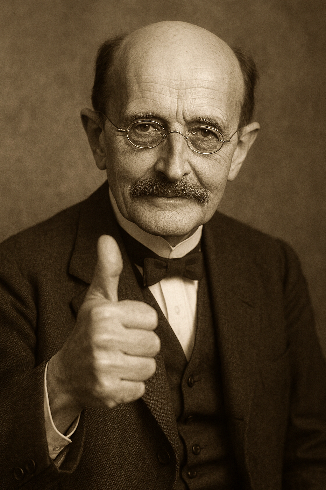

<!DOCTYPE html>
<html lang="nl"></html>


<meta charset="utf-8"/>
<title>Gecombineerde Meting en Analyse experiment: Bepaling van de constante van Planck met LED's</title>
<style>
        body {
            font-family: Arial, sans-serif;
            margin: 20px;
        }
        section {
            margin-bottom: 40px;
        }
        h2 {
            color: #2c3e50;
        }
        hr {
            border: none;
            border-top: 2px solid #ccc;
            margin: 20px 0;
        }
    </style>

<body>
<h1>Bepaling van de constante van Planck met LED's</h1>
<h2><i>Gecombineerde Meting en Analyse van het experiment</i></h2>
<section id="arduino-meting">
<h3>Meten: Lees de Arduino uit via de seriële poort.</h3>
<p></p><ol>
    <li>Zorg dat deze webpagina ververst is.</li>
    <li>Sluit de Arduino aan op de USB-poort van je computer.</li>
    <li>Druk op de knop "Verbinden" hieronder en kies de juiste seriële poort.</li>
    <li>Kies "Verbinding maken" - Als de verbinding is gelukt, zie je "Verbonden" staan.</li>
    <li>Druk de (zwarte) knop in je schakeling eventjes (2 seconden) in en laat deze vervolgens los</li>
    <li>De meting is nu gestart.</li>
    <li>Je ziet nu de gemeten spanningen verschijnen bij "Live Waarden".</li>
    <li>Als de getallen stoppen met veranderen (<i>Voltage A5:</i> 0.000V), noteer dan de waarde bij <i>Voltage A0</i> hieronder in de tabel bij de juiste kleur LED. <b>(scroll naar beneden)</b>.<br> Dit is de drempelspanning.</li>
    <li>Verwissel de LED van kleur, herhaal de meting en meet zo alle kleuren LED's. Denk eraan: <b>De lange poot van de LED moet bovenaan.</b></li>
    <li>De doorzichtige LED doe je als laatste. Die zie je niet branden, want die is infrarood!</li>
</ol></p>

  <div class="controls">
    <button id="connectButton">Verbinden</button>
    <button id="resetButton">Reset</button>
    <button id="stopButton">Stop</button>
    <label class="small">Baudrate: <input id="baudRate" type="number" value="9600" min="300" step="100" style="width:100px"></label>
    <span id="status">Niet verbonden</span>
  </div>

  <div id="liveValues">
    <h3>Live Waarden</h3>
    <p>Voltage A0: <strong><span id="voltage1">--</span></strong> V</p>
    <p>Voltage A5: <strong><span id="voltage2">--</span></strong> V</p>
    <p class="small">Laatste ruwe regels (debug):</p>
    <pre id="lastLines">(geen)</pre>
  </div>

  <script>
    let port = null;
    let reader = null;
    let keepReading = false;
    let paused = false;
    let readBuffer = '';
    let valueBuffer = [];

    const connectButton = document.getElementById('connectButton');
    const resetButton = document.getElementById('resetButton');
    const stopButton = document.getElementById('stopButton');
    const statusEl = document.getElementById('status');
    const lastLinesEl = document.getElementById('lastLines');

    function setStatus(s) { statusEl.textContent = s; }

    function pushTokensFromLine(line) {
      const tokens = line.split(/[,;\s]+/).filter(t => t !== '');
      for (const t of tokens) {
        valueBuffer.push(t);
        if (valueBuffer.length >= 2) {
          const v1 = parseFloat(valueBuffer[0]);
          const v2 = parseFloat(valueBuffer[1]);
          document.getElementById('voltage1').textContent = Number.isFinite(v1) ? v1.toFixed(3) : valueBuffer[0];
          document.getElementById('voltage2').textContent = Number.isFinite(v2) ? v2.toFixed(3) : valueBuffer[1];
          valueBuffer = [];
        }
      }
    }

    async function startReading() {
      if (!port || !port.readable) {
        setStatus('Geen geldige poort om te lezen.');
        return;
      }
      if (reader) return;

      try {
        reader = port.readable.getReader();
        keepReading = true;
        paused = false;
        setStatus('Verbonden — lezen...');
        const textDecoder = new TextDecoder();

        while (keepReading) {
          if (paused) {
            await new Promise(r => setTimeout(r, 200));
            continue;
          }
          const { value, done } = await reader.read();
          if (done) break;
          if (value) {
            readBuffer += textDecoder.decode(value, { stream: true });
            const lines = readBuffer.split(/\r?\n/);
            readBuffer = lines.pop();

            for (let raw of lines) {
              const line = raw.trim();
              if (line === '') continue;
              lastLinesEl.textContent = (line + '\n') + lastLinesEl.textContent;
              if (lastLinesEl.textContent.split('\n').length > 30) {
                lastLinesEl.textContent = lastLinesEl.textContent.split('\n').slice(0,30).join('\n');
              }
              pushTokensFromLine(line);
            }
          }
        }
      } catch (err) {
        console.error('Leesfout:', err);
        setStatus('Leesfout: ' + (err && err.message ? err.message : err));
      } finally {
        try { if (reader) { await reader.releaseLock(); } } catch(e){}
        reader = null;
        keepReading = false;
      }
    }

    async function connectSerial() {
      try {
        const baudRate = parseInt(document.getElementById('baudRate').value) || 9600;

        if (!port) {
          port = await navigator.serial.requestPort();
        }

        if (!port.opened && !port.readable) {
          await port.open({ baudRate });
        } else if (!port.readable) {
          try { await port.open({ baudRate }); } catch(e){}
        }

        await startReading();
        connectButton.textContent = 'Ontkoppel';
      } catch (err) {
        console.error('Fout bij verbinden:', err);
        setStatus('Verbindingsfout: ' + (err && err.message ? err.message : err));
      }
    }

    async function disconnectSerial() {
      setStatus('Ontkoppelen...');
      try {
        if (reader) {
          try { await reader.cancel(); } catch(e){}
          try { await reader.releaseLock(); } catch(e){}
          reader = null;
        }
        if (port) {
          try { await port.close(); } catch (e) {}
          port = null;
        }
        setStatus('Niet verbonden');
        connectButton.textContent = 'Verbinden';
        stopButton.textContent = 'Stop';
        paused = false;
      } catch (err) {
        console.error('Fout bij ontkoppelen:', err);
        setStatus('Fout bij ontkoppelen');
      }
    }

    connectButton.addEventListener('click', async () => {
      if (!port) {
        await connectSerial();
      } else {
        await disconnectSerial();
      }
    });

    resetButton.addEventListener('click', async () => {
      setStatus('Reset...');
      document.getElementById('voltage1').textContent = '--';
      document.getElementById('voltage2').textContent = '--';
      readBuffer = '';
      valueBuffer = [];
      lastLinesEl.textContent = '(geen)';
      paused = false;
      stopButton.textContent = 'Stop';

      if (reader) {
        try { await reader.cancel(); } catch(e){}
        try { await reader.releaseLock(); } catch(e){}
        reader = null;
      }

      if (port && port.readable) {
        setTimeout(() => {
          startReading();
          setStatus('Verbonden — lezen (na reset)');
        }, 150);
      } else {
        setStatus('Niet verbonden');
      }
    });

    stopButton.addEventListener('click', () => {
      if (port && reader) {
        paused = !paused;
        if (paused) {
          setStatus('Lezen gepauzeerd (stop)');
          stopButton.textContent = 'Doorgaan';
        } else {
          setStatus('Verbonden — lezen...');
          stopButton.textContent = 'Stop';
        }
      }
    });

    (function checkSupport(){
      if (!('serial' in navigator)) {
        setStatus('Web Serial API niet beschikbaar in deze browser. Gebruik Chrome/Edge op HTTPS of localhost.');
        connectButton.disabled = true;
        resetButton.disabled = true;
        stopButton.disabled = true;
      }
    })();
  </script>
</body>
</html>

    </section>


<hr/><section id="arduino-meting-corrected">
<!DOCTYPE html> 


<meta charset="utf-8"/>
<meta content="width=device-width,initial-scale=1" name="viewport">
<title>Seriële poort uitlezen van een Arduino</title>
<style>
    body { font-family: Inter, Roboto, Arial, sans-serif; padding:18px; max-width:900px; }
    .controls { margin-bottom: 12px; }
    button, input { margin-right:8px; padding:8px 12px; }
    #status { margin-left:8px; font-weight:600; }
    #liveValues { margin-top:18px; background:#f7f7f7; padding:12px; border-radius:8px; width:320px; }
    #liveValues p { margin:6px 0; font-size:16px; }
    .small { font-size:13px; color:#444; }
    pre { background:#222; color:#0f0; padding:8px; border-radius:6px; max-height:200px; overflow:auto; }
  </style>
</meta>


</section>

<section id="led-analyse">
<h3>Verwerken: Vul de meetgegevens in.</h3>

<!DOCTYPE html>


<meta charset="utf-8"/>
<title>LED Drempelspanning Analyse</title>
<script src="https://cdn.jsdelivr.net/npm/chart.js"></script>
<style>
    body { font-family: Arial, sans-serif; margin: 20px; }
    table { border-collapse: collapse; margin-bottom: 20px; }
    th, td { border: 1px solid #ccc; padding: 6px 10px; text-align: center; }
    th { background-color: #f0f0f0; }
    input { width: 80px; }
    #trendline { margin-top: 15px; font-weight: bold; }
    #planck-summary {
    font-weight: bold;
    font-size: 1.2em;
    background: #eaf6ff;
    border: 2px solid #3399cc;
    border-radius: 8px;
    padding: 16px;
    margin-top: 20px;
    color: #1a3d5d;
    }
  </style>

<p><ul><li>Vul de drempelspanning (V) in voor de leds, de rest wordt automatisch berekend.<br>Ook de grafiek wordt automatisch gemaakt</li></ul></p>
<table id="ledTable">
<thead>
<tr>
<th>Kleur</th>
<th>Golflengte (nm)</th>
<th>Drempelspanning (V)</th>
<th>Frequentie (Hz)</th>
<th>Energie (J)</th>
</tr>
</thead>
<tbody>
<tr><td>Blauw</td><td>458</td><td><input step="0.01" type="number"/></td><td></td><td></td></tr>
<tr><td>Groen</td><td>580</td><td><input step="0.01" type="number"/></td><td></td><td></td></tr>
<tr><td>Geel</td><td>590</td><td><input step="0.01" type="number"/></td><td></td><td></td></tr>
<tr><td>Rood</td><td>630</td><td><input step="0.01" type="number"/></td><td></td><td></td></tr>
<tr><td>Infrarood</td><td>940</td><td><input step="0.01" type="number"/></td><td></td><td></td></tr>
</tbody>
</table>
<canvas height="400" id="myChart" width="700"></canvas>
<div id="trendline"></div>
<script>
    const c = 2.998e8;        // lichtsnelheid (m/s)
    const q = 1.602e-19;  // elementaire lading (C)
    const table = document.getElementById("ledTable").getElementsByTagName("tbody")[0];
    const ctx = document.getElementById("myChart").getContext("2d");

    let chart = new Chart(ctx, {
      type: "scatter",
      data: { datasets: [{
        label: "LED data",
        data: [],
        backgroundColor: "blue"
      },{
        label: "Lineaire fit",
        data: [],
        type: "line",
        borderColor: "red",
        fill: false,
        pointRadius: 0
      }]},
      options: {
        scales: {
          x: {
            title: { display: true, text: "frequentie (Hz)" },
            ticks: {
              callback: function(value) {
                return Number(value).toExponential(1);
              }
            }
          },
          y: {
            title: { display: true, text: "Energie (J)" },
            ticks: {
              callback: function(value) {
                return Number(value).toExponential(1);
              }
            }
          }
        }
      }
    });

    

    function update() {
      let xs = [], ys = [];
      [...table.rows].forEach(row => {
        let lambda = parseFloat(row.cells[1].textContent) * 1e-9;
        let V = parseFloat(row.cells[2].firstChild.value);
        let f = c / lambda;
        let Energie = (isNaN(V) ? NaN : q * V);

        
        row.cells[3].textContent = f.toExponential(1);
        row.cells[4].textContent = isNaN(Energie) ? "" : Energie.toExponential(1);

        if (!isNaN(Energie)) {
          xs.push(f);
          ys.push(Energie);
        }
      });

      // Lineaire fit door de oorsprong: slope = Σ(xy)/Σ(x²)
      let slope = (xs.reduce((s, x, i) => s + x*ys[i], 0)) /
                  (xs.reduce((s, x) => s + x*x, 0));

      let fitData = [];
      if (xs.length > 1) {
        let minX = Math.min(...xs), maxX = Math.max(...xs);
        fitData = [{x:minX, y:slope*minX}, {x:maxX, y:slope*maxX}];
      }

      chart.data.datasets[0].data = xs.map((x,i) => ({x:x, y:ys[i]}));
      chart.data.datasets[1].data = fitData;
      chart.update();

      // Planck-constante uit de fit
      let h = slope;
      window.hPlanck = h; // want Energie = h f
      

      document.getElementById("trendline").innerHTML =
        xs.length>1
          ? `Fit: Energie = (${toTimesTenNotation(slope, 1)})·frequentie 
             ⇒ h ≈ ${toTimesTenNotation(h, 1)} J·s 
             `
          : "";
    }

    // Event listeners
    [...table.querySelectorAll("input")].forEach(inp => inp.addEventListener("input", update));
  </script>


</section>
<hr></hr>
<p id="planck-summary" style="display:none;"></p>
<img id="designer-img" src="..." alt="Resized Image">
<!--  -->
<p id="designer-source" style="display:none; font-size:13px; color:#555; margin-top:4px;">
    Afbeelding van Planck met "thumbs-up!" samengesteld door Copilot (GPT4)
</p>
<script>
function checkInputs() {
    const inputs = document.querySelectorAll('input[type="number"]');
    let allFilled = true;
    inputs.forEach(input => {
        if (input.value.trim() === '') {
            allFilled = false;
        }
    });
    if (allFilled && window.hPlanck) {
        const h = window.hPlanck;
        const h_theory = 6.626e-34;
        const diff = Math.abs((h - h_theory) / h_theory * 100).toFixed(0);
        const summary = `Goed gedaan! 
        <br>De gevonden waarde voor de constante van Planck is ${toTimesTenNotation(h, 1)} (Js).
        <br>Dat verschilt maar ${diff} % van de theoretische waarde. 
        <br>Volgens de quantum-theorie is de constante van Planck: 6.626×10⁻³⁴ (Js). 
        <br>Dat is 0.0000000000000000000000000000000006626 (Js)`;
        document.getElementById('planck-summary').innerHTML = summary;
        document.getElementById('planck-summary').style.display = 'block';
        document.getElementById('designer-img').style.display = 'block';
        document.getElementById('designer-source').style.display = 'block';
    } else {
        document.getElementById('planck-summary').style.display = 'none';
        document.getElementById('designer-img').style.display = 'none';
        document.getElementById('designer-source').style.display = 'none';
    }
}

window.onload = function() {
    const inputs = document.querySelectorAll('input[type="number"]');
    inputs.forEach(input => {
        input.addEventListener('input', () => {
            checkInputs();
        });
    });
    checkInputs();
};
</script>
<script>
function toTimesTenNotation(num, digits = 3) {
  const expStr = num.toExponential(digits);
  const match = expStr.match(/^([\d.]+)e([+-]\d+)$/);
  if (!match) return num.toString();
  const base = match[1];
  const exponent = match[2].replace('+', ''); // Remove plus sign for readability
  return `${base}×10<sup>${exponent}</sup>`;
}
</script>
</body>

